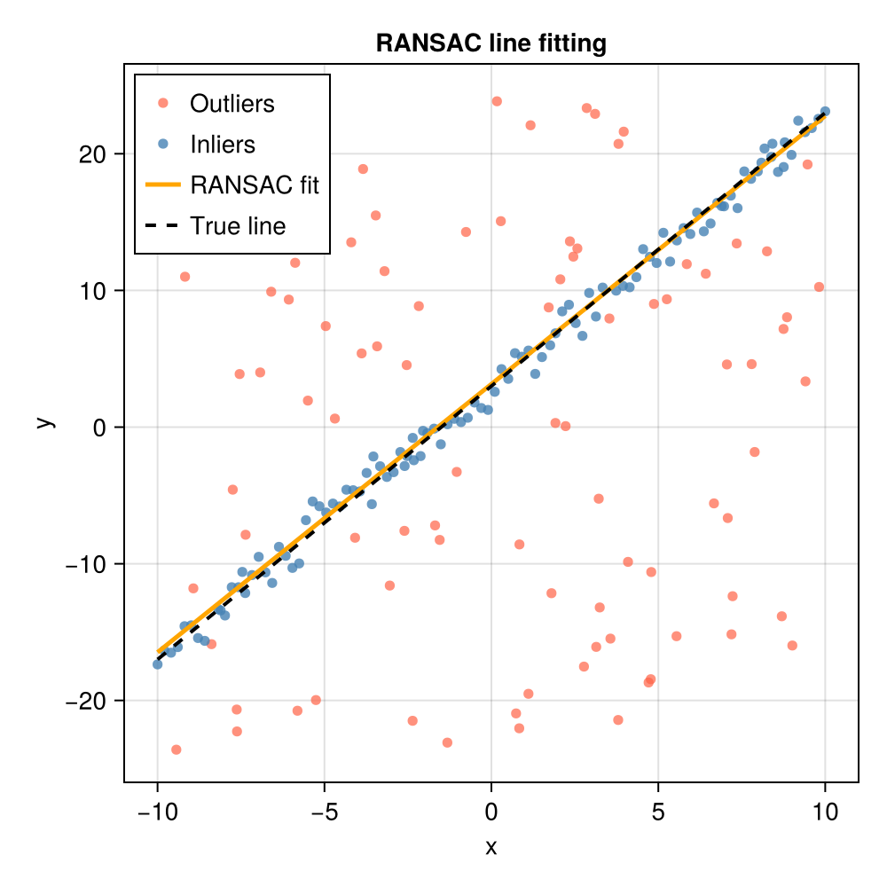

RANSAC
Background
RANSAC (Random Sample Consensus) is a robust model-fitting algorithm introduced by (Fischler and Bolles, 1981). Unlike ordinary least-squares methods, which are sensitive to outliers, RANSAC explicitly divides the data into inliers (points well explained by the model) and outliers (points that are not), and seeks the model that maximises the size of the inlier set. It has become a foundational tool in computer vision, photogrammetry, and geometric estimation; a thorough treatment can be found in (Hartley and Zisserman, 2004).
The algorithm
Given a dataset of $N$ points, the minimum number of points $s$ needed to uniquely determine a model (e.g. $s = 2$ for a line, $s = 3$ for a plane), and an inlier distance threshold $t$, one iteration of RANSAC proceeds as follows:
- Hypothesis — draw a random minimal sample of $s$ points and fit a candidate model to them.
- Verification — evaluate every data point against the candidate model; collect those within distance $t$ as its consensus set (inlier set).
- Update — if the consensus set is larger than the current best, record the candidate model and its inlier set.
The number of iterations is chosen adaptively so that, with probability $p$ (typically 0.99), at least one drawn sample is free from outliers. If the current best inlier fraction is $\varepsilon$, the expected number of trials required is
\[N = \frac{\log(1 - p)}{\log\!\left(1 - \varepsilon^s\right)}.\]
RANSAC updates this estimate after each improvement, allowing it to terminate early when a satisfying model is found quickly.
When to use RANSAC
RANSAC is well suited to problems where
- the fraction of outliers is large (up to 50% or more),
- the inlier noise is small relative to the outlier spread, and
- the fitting step for the minimal sample is fast.
It is less suitable when the minimum sample size $s$ is large (the required number of trials grows exponentially with $s$) or when computing the full-dataset residuals is expensive.
API
ConsensusFitting.ransac — Function
ransac(x, fittingfn, distfn, s, t;
rng = Random.default_rng(),
degenfn = _ -> false,
verbose = false,
max_data_trials = 100,
max_trials = 1000,
p = 0.99)Robustly fit a model to data using the RANSAC (Random Sample Consensus) algorithm.
Arguments
x: Data array of size[...] × N(arbitrary dimensionality per data point is supported, but the last dimension must correspond to the number of data points). Commonly will bed x N, wheredis the dimensionality of each data point andNis the total number of data points.fittingfn: Function that fits a model to a minimal sample ofsdata points. Must have the signatureM = fittingfn(x). The function should return an empty collection when it cannot produce a valid model (e.g., degenerate input). It may also return a collection of multiple candidate models (for example, up to three fundamental matrices can be recovered from seven point correspondences); in that casedistfnis responsible for selecting the best one.distfn: Function that scores a model against all data points and returns aNamedTuple. Must have the signaturent = distfn(M, x, t), wherent.inliersis a vector of last-dimension indices intoxfor which the residual is below thresholdt(i.e., the inlier data points arex[:, :, ..., nt.inliers]) andnt.modelis the scored model. WhenMholds multiple candidate models this function should select and return only the model with the most inliers.s: Minimum number of data points required byfittingfnto fit a model (e.g., 2 for a line, 3 for a plane, 4 for a homography).t: Distance threshold below which a data point is classified as an inlier.
Keyword Arguments
rng::Random.AbstractRNG: Random number generator to use for sampling. Defaults toRandom.default_rng().degenfn: Function that tests whether a candidate minimal sample would produce a degenerate model. Must have the signaturer = degenfn(x)and returntruewhen the sample is degenerate. Defaults to_ -> false, which treats every sample as non-degenerate and leaves degeneracy detection entirely tofittingfn(which should return an empty collection for degenerate inputs).verbose::Bool: Whentrue, prints the current trial number and the adaptive estimate of the total number of trials required at each iteration. Defaults tofalse.verbose_io::IO:IOstream to which verbose output is written. Defaults tostdout. Primarily useful for testing or redirecting output.max_data_trials::Integer: Maximum number of attempts to draw a non-degenerate minimal sample before emitting a warning and advancing to the next outer iteration. Defaults to100.max_trials::Integer: Hard upper bound on the number of RANSAC iterations. Defaults to1000.p::Real: Desired probability of drawing at least one outlier-free sample. Controls the adaptive stopping criterion. Defaults to0.99.
Returns
M: The model with the greatest number of inliers found during the search.inliers: Vector of column indices ofxthat are inliers toM.
Extended Help
RANSAC alternates between two steps. In the hypothesis step a minimal random sample of s points is drawn and a candidate model is fitted to it. In the verification step every data point is tested against the candidate model; those within distance t form the consensus set (inlier set) of that model. The hypothesis with the largest consensus set is retained. The algorithm terminates adaptively once the expected number of trials required to find an outlier-free sample with probability p has been reached, or after max_trials iterations, whichever comes first.
The adaptive estimate used for the number of trials is
\[N = \frac{\log(1 - p)}{\log\!\left(1 - \varepsilon^s\right)}\]
where $\varepsilon$ is the current best estimate of the inlier fraction and $s$ is the minimum sample size.
References
Example: fitting a line in the presence of outliers
The following example generates 100 inlier points near the line $y = 2x + 3$, adds 100 outliers scattered over a wider region, and uses RANSAC to recover the true parameters.
using ConsensusFitting
using Random
using CairoMakie
Random.seed!(42)
# ── Generate synthetic data ────────────────────────────────────────────────
a_true, b_true = 2.0, 3.0
n_inliers = 100
n_outliers = 100
x_in = collect(range(-10.0, 10.0; length=n_inliers))
y_in = a_true .* x_in .+ b_true .+ randn(n_inliers)
x_out = -10.0 .+ 20.0 .* rand(n_outliers)
y_out = -25.0 .+ 50.0 .* rand(n_outliers)
# Pack into a 2 × N matrix (each column is one data point [x; y])
data = [vcat(x_in, x_out)'; vcat(y_in, y_out)']
# ── Define the fitting and distance functions ──────────────────────────────
# Fit a line y = a*x + b through exactly 2 points.
function fit_line(pts)
x1, y1 = pts[1, 1], pts[2, 1]
x2, y2 = pts[1, 2], pts[2, 2]
isapprox(x1, x2; atol=1e-10) && return [] # vertical line → degenerate
a = (y2 - y1) / (x2 - x1)
b = y1 - a * x1
return [a, b]
end
# Classify points using their vertical (y-direction) residual.
function line_dist(M, x, t)
a, b = M[1], M[2]
resid = abs.(x[2, :] .- (a .* x[1, :] .+ b))
inliers = findall(resid .< t)
return (model=M, inliers=inliers)
end
# ── Run RANSAC ─────────────────────────────────────────────────────────────
M, inliers = ransac(data, fit_line, line_dist, 2, 2.0)
println("Recovered slope: ", round(M[1]; digits=4), " (true: $a_true)")
println("Recovered intercept: ", round(M[2]; digits=4), " (true: $b_true)")
println("Inliers identified: ", length(inliers), " / $(size(data, 2))")Recovered slope: 1.9624 (true: 2.0)
Recovered intercept: 3.1463 (true: 3.0)
Inliers identified: 108 / 200Visualising the result
outlier_mask = trues(size(data, 2))
outlier_mask[inliers] .= false
fig = Figure(size=(500, 500))
ax = Axis(fig[1, 1];
xlabel="x", ylabel="y",
title="RANSAC line fitting")
# All data points
scatter!(ax, data[1, outlier_mask], data[2, outlier_mask];
color=(:tomato, 0.7), markersize=8, label="Outliers")
scatter!(ax, data[1, inliers], data[2, inliers];
color=(:steelblue, 0.8), markersize=8, label="Inliers")
# True and recovered lines
x_plot = range(-10.0, 10.0; length=200)
lines!(ax, x_plot, M[1] .* x_plot .+ M[2];
color=:orange, linewidth=2.5, label="RANSAC fit")
lines!(ax, x_plot, a_true .* x_plot .+ b_true;
color=:black, linewidth=2, linestyle=:dash, label="True line")
axislegend(ax; position=:lt)
fig
Once the inlier set has been identified, a final fit can be performed to the set of all inliers if desired.
using LinearAlgebra: dot
"""
fit_line_overconstrained(data)
Fit a line y = a + b*x to data given as a 2×N matrix:
data[1, :] = x
data[2, :] = y
# Returns
- `θ` :[a, b] (slope, intercept)
- `Σθ`: covariance matrix of θ (2×2)
- `σ²`: estimated residual variance
"""
function fit_line_overconstrained(data)
@assert size(data, 1) == 2 "Input must be a 2×N matrix"
x = view(data, 1, :)
y = view(data, 2, :)
N = length(x)
@assert N ≥ 2 "Need at least two points"
# Least-squares solution
A = hcat(x, ones(N)) # Design matrix: [x 1]
θ = A \ y # equivalent to (A'A)^(-1)A'y but more stable
r = y - A * θ # Residuals
# Degrees of freedom: N - number of parameters (2)
dof = N - 2
@assert dof > 0 "Need more than 2 points for covariance estimate"
# Residual variance estimate
σ² = dot(r, r) / dof
# Covariance matrix: σ² * (A'A)^(-1)
Σθ = σ² * inv(A' * A)
return θ, Σθ, σ²
end
μ, Σθ, σ² = fit_line_overconstrained(data[:, inliers])
println("Recovered slope: ", round(μ[1]; digits=4), " ± ", round(sqrt(Σθ[1,1]); digits=4), " (true: $a_true)")
println("Recovered intercept: ", round(μ[2]; digits=4), " ± ", round(sqrt(Σθ[2,2]); digits=4), " (true: $b_true)")Recovered slope: 1.9702 ± 0.0146 (true: 2.0)
Recovered intercept: 2.9113 ± 0.0856 (true: 3.0)References
This page cites the following references:
- Fischler, M. A. and Bolles, R. C. (1981). Random Sample Consensus: A Paradigm for Model Fitting with Applications to Image Analysis and Automated Cartography. Communications of the ACM 24, 381–395.
- Hartley, R. and Zisserman, A. (2004). Multiple View Geometry in Computer Vision. 2 Edition (Cambridge University Press, Cambridge).